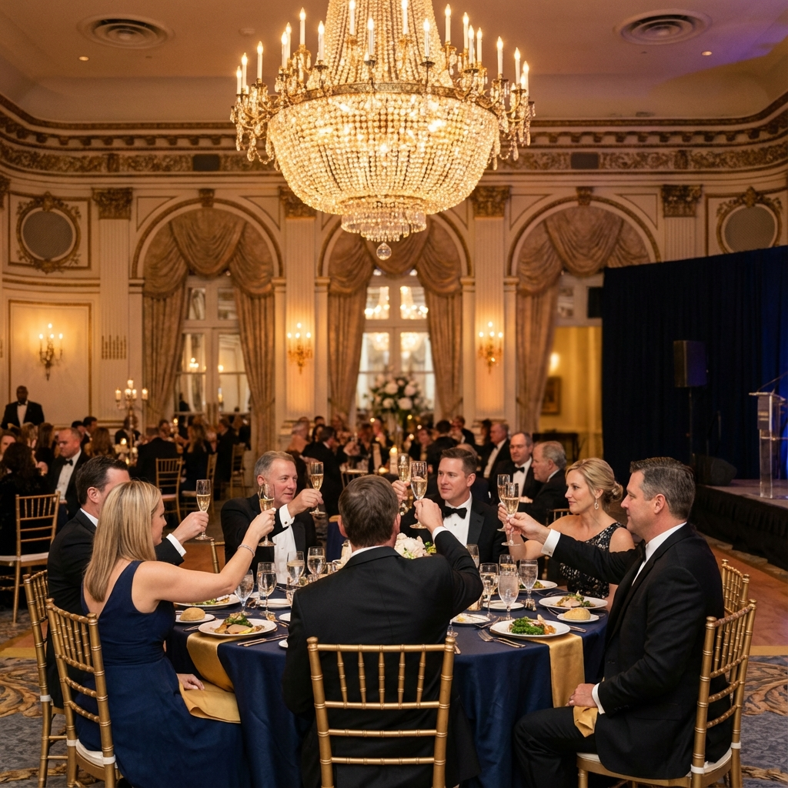

Activities
Education, Networking, and Community Service
Education & CPD
Regular Seminars
Analysis of latest legal trends in UK and Korea. Specialized deep-dive sessions.
Continuing Professional Development
Practical workshops and online courses to maintain and enhance professional competence.
Networking

- Monthly Networking Dinners: Casual gatherings for members.
- Annual Gala: A formal evening celebrating the year's achievements.
- Cultural Events: Golf outings and cultural experiences for families.
Public Interest & Pro Bono
KOBRLA is committed to giving back to the community.
Legal Clinics
Free legal consultation sessions for the Korean community.
Social Support
Supporting the underprivileged and promoting social justice.
Project Pro Bono
Collaborative pro bono projects with partner organizations.